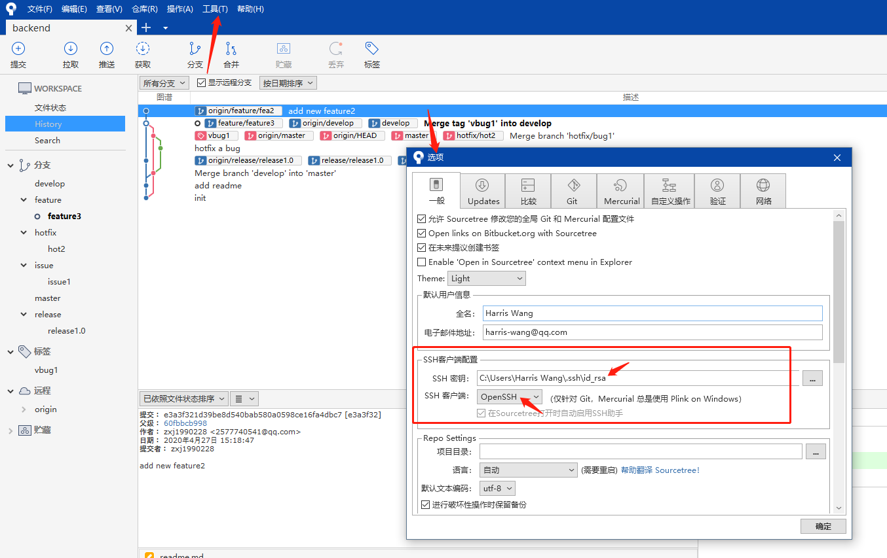

安装
安装git
去https://git-scm.com/下载git安装包，默认安装即可。
配置git
打开git bash，输入以下命令，配置自己的用户名和邮箱地址：
git config --global user.name "username"
git config --global user.email "email"
输入以下命令产生自己的密钥对：
ssh-keygen -t rsa -C "your email"
按三次回车键即可。
登录gitlab，上传自己的公钥，参考Gitlab 用户。
安装Sourcetree
- 去https://www.sourcetreeapp.com/下载安装包。
- 安装过程中选择Bitbucket，注册Bitbucket账号授权安装。
- 不要选择mercurial，下载会很慢。
配置Sourcetree
